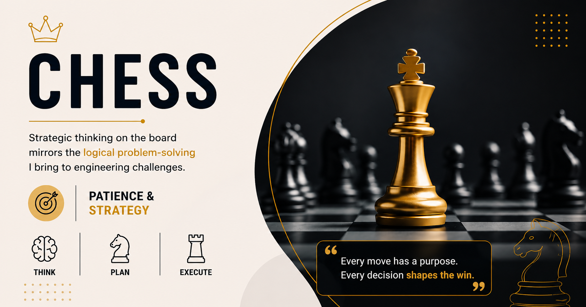
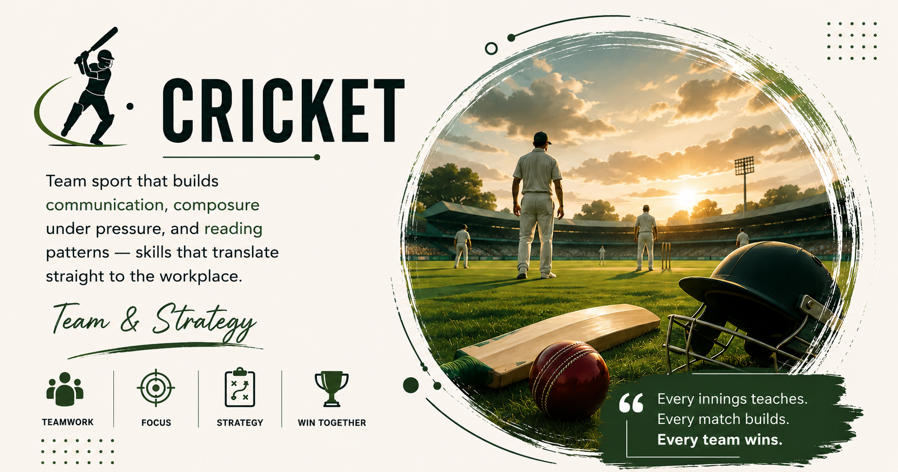
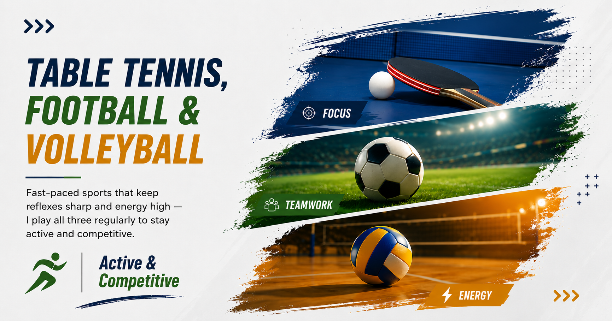
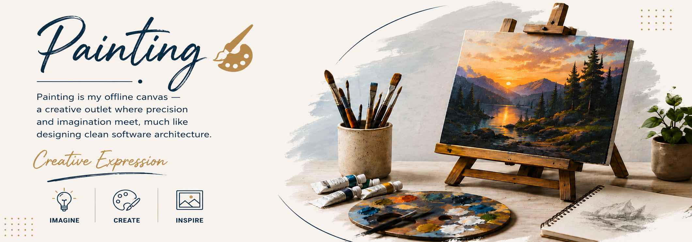

OPEN SOURCE
Transforming raw data into actionable insights and building scalable applications that solve real-world problems — from Power BI dashboards to full-stack platforms.
I'm a Software Engineer and Data Analyst with a B.E. in Computer Engineering from Sinhgad Institute of Technology, Lonavala — fluent in both SQL queries and existential debugging crises, usually before my morning coffee.
My work lives at the intersection of data and code: I build Power BI dashboards that make raw numbers confess their secrets, and I ship full-stack applications in Python, Java, and JavaScript that (mostly) don't break in production. Currently, I'm working as a Data Analyst at LaunchEd Global, where I use CRM analytics and behavioral data to optimize client outreach — driving an 18% jump in partnership sign-ups and a 25% boost in engagement, proving that spreadsheets can occasionally be exciting.
Before this, as a Data Analyst Intern at PREPCA, I spent my days playing detective with messy datasets — cleaning, validating, and turning chaos into dashboards leadership could actually trust, improving reporting readiness by nearly 30%. That analytical instinct is backed by hands-on software engineering stints at Goldman Sachs and Electronic Arts, plus full-stack development at InternPe — which basically means I'm equally at home in a spreadsheet or a stack trace. I'm always on the hunt for the next problem where data and software can team up to build something people actually want to use (not just something that technically works).
From data pipelines to production APIs — a stack spanning analytics and full-stack engineering.
Four roles, one throughline: using data to make better decisions, faster.
End-to-end builds spanning data pipelines, dashboards, and full-stack platforms.






From school corridors to university labs — a decade of building the foundation.
Notes on data analytics, BI, and the SQL queries I keep coming back to.
Preview it below, or grab the PDF for your records.
Open to Data Analyst and Software Engineering roles — fintech and lending especially. Reach out directly or use the form.